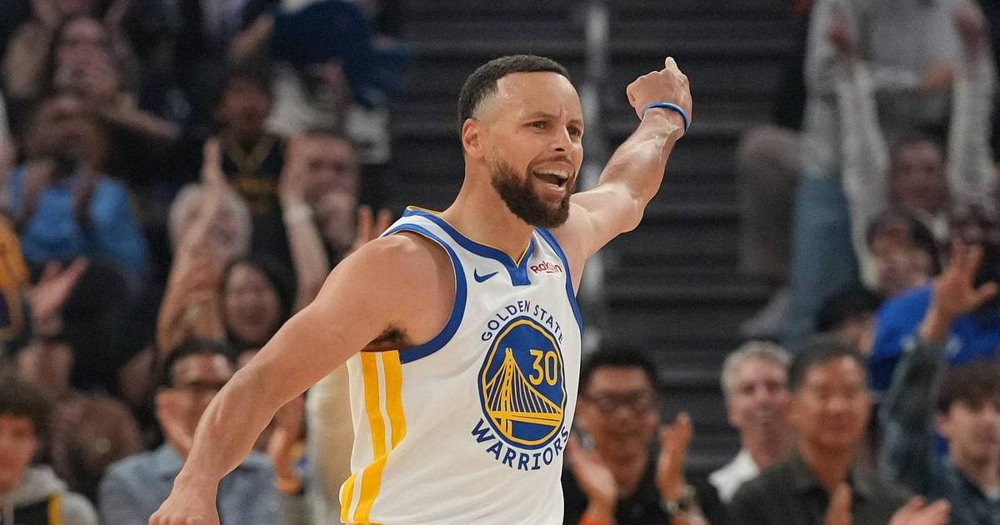

Stephen Curry has an oblique tear — out at least two weeks, and the Warriors are bracing for a month
An MRI confirmed an oblique abdominal tear for Stephen Curry after he left Wednesday's loss in Houston after six minutes. The Warriors say he will be re-evaluated in two weeks. ESPN reports they are bracing for closer to a month.

Disclosure: this post contains affiliate links. I earn a commission on qualifying purchases.
The news
Stephen Curry has an oblique abdominal tear, the Golden State Warriors announced Thursday, and he will be re-evaluated in two weeks. An MRI taken Wednesday night confirmed the injury. The team gave no return date — a re-evaluation is a checkpoint, not a comeback — and sources told ESPN's Shams Charania the Warriors are bracing for an absence closer to a month.
It happened fast. Six minutes into Wednesday's 115-108 loss to the Houston Rockets, Curry came off a Draymond Green screen and buried a 28-foot three, then yelled in pain after the release and signaled toward the bench. He had been grabbing at his right side for a few minutes already. He scored three points, left with 6:25 remaining in the first quarter, and did not return. Coach Steve Kerr said afterward that Curry told him it was a tweak of his side unlike anything he had felt before, and that concern was high while they waited on imaging. At halftime, before leaving the arena for the MRI, Curry spoke to his teammates and told them to focus on the task at hand.
The loss ended Golden State's eight-game win streak. The absence is the bigger story.
The stretch
At minimum, Curry misses the next seven games: at San Antonio on Friday, then New Orleans, Dallas, Memphis, Boston, Sacramento and Portland. That is the whole of the Warriors' next two weeks, and it comes with Jimmy Butler already sidelined while rehabbing the torn ACL he suffered in January. Golden State entered the stretch at 8-4, and the two players who were supposed to carry the season are both out.
The Warriors have leaned on rookies and backups before — they had to finish the Houston game that way, with Yaxel Lendeborg and Brandin Podziemski taking on the scoring and ball-handling — but this is a different test. Curry was averaging 30.6 points a game and dragging the offense with him. Without him, and without Butler, the next two weeks are about survival: stay close enough in the standings that the season is still there when the re-evaluation comes.
What's next
The first test is Friday night in San Antonio, against a Spurs team that has won 10 straight. The Warriors will get another update when Curry is re-evaluated in two weeks. Until then, the only honest timeline is the one the team gave: at least two weeks, probably more.
Gear up: Fanatics